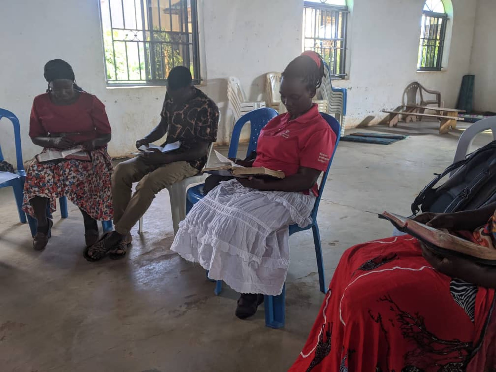

A newly launched program
JEFLO Bible College and Transformational Centre
Equipping church ministers, pastors, and Christian faith-based development workers to bridge theology and practice.

About the program
This is a newly launched program at JEFLO aimed at equipping church ministers, Christian faith-based development workers, and pastors serving across various cultures, enabling them to bridge theology and practice as they deal with specific life-threatening challenges like poverty, food insecurity, injustice, and disease.
Purely anchored in Scripture, instructed and empowered by the Holy Spirit, we challenge ourselves and future church leaders and Christian faith-based development workers to be competent contextual innovators while walking in the footsteps of Jesus Christ.
We believe that God has uniquely gifted and shaped each one of us, and that the Bible has numerous solutions to today’s most pressing challenges in the world. Whereas we strongly focus on critical thinking and learning, this program largely challenges leaders to read the Bible as a major reference in responding to today’s world challenges. Only in this way can we bring Christ’s hope and healing in the world.
This program has been built in collaboration with Jesus Bible College, based in the USA, and other transformational centers across Africa, giving it deep local knowledge and global expertise so that learners can benefit from the wealth of diverse cultural perspectives.

Photos